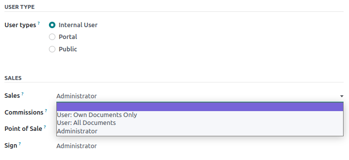
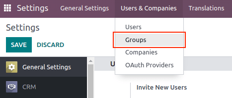
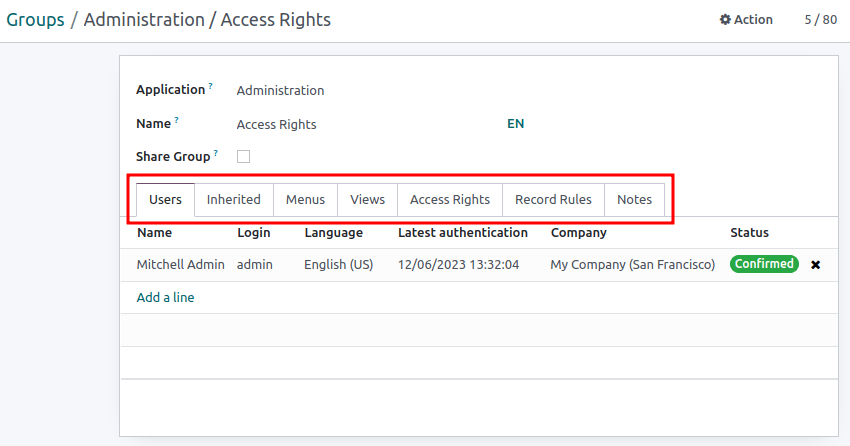

Access rights¶
Access rights are permissions that determine the content and applications users can access and edit. In Odoo, these permissions can be set for individual users or for groups of users. Limiting permissions to only those who need them ensures that users do not modify or delete anything they should not have access to.
Only an administrator can change access rights.
Danger
Making changes to access rights can have a detrimental impact on the database. This includes impotent admin, which means that no user in the database can make changes to the access rights. For this reason, Odoo recommends contacting an Odoo Business Analyst, or our Support Team, before making changes.
Tip
A user must have the specific Administration access rights set on their user profile, in order to make changes on another user’s settings for access rights.
To access this setting, navigate to .
Once at the setting, an already existing administrator must change the setting in the Administration field to Access Rights.
Once complete, click Save to save the changes, and implement the user as an administrator.
Users¶
The access rights for individual users are set when the user is added to the database, but they can be adjusted at any point in the user’s profile.
To make changes to a user’s rights, click on the desired user to edit their profile.

On the user’s profile page, in the Access Rights tab, scroll down to view the current permissions.
For each app, use the drop-down menu to select what level of permission this user should have. The options vary for each section, yet the most common are: Blank/None, User: Own Documents, User: All Documents, or Administrator.
The Administration field in the Access Rights tab has the following options: Settings or Access Rights.
Create and modify groups¶
Groups are app-specific sets of permissions that are used to manage common access rights for a large amount of users. Administrators can modify the existing groups in Odoo, or create new ones to define rules for models within an application.
To access groups, first activate Odoo’s developer mode, then go to .
To create a new group from the Groups page, click Create. Then, from the blank group form, select an Application, and complete the group form (detailed below).
To modify existing groups, click on an existing group from the list displayed on the Groups page, and edit the contents of the form.
Enter a Name for the group and tick the checkbox next to Share Group, if this group was created to set access rights for sharing data with some users.
Important
Always test the settings being changed to ensure they are being applied to the correct users.
The group form contains multiple tabs for managing all elements of the group. In each tab, click Add a line to add a new row for users or rules, and click the ❌ (remove) icon to remove a row.
Users tab: lists the current users in the group. Users listed in black have administrative rights. Users without administrative access appear in blue. Click Add a line to add users to this group.
Inherited tab: inherited means that users added to this group are automatically added to the groups listed on this tab. Click Add a line to add inherited groups.
Example
For example, if the group Sales/Administrator lists the group Website/Restricted Editor in its Inherited tab, then any users added to the Sales/Administrator group automatically receive access to the Website/Restricted Editor group, as well.
Menus tab: defines which menus/models the group can have access to. Click Add a line to add a specific menu.
Views tab: lists which views in Odoo the group has access to. Click Add a line to add a view to the group.
Access Rights tab: lists the first level of rights (models) that this group has access rights to. Click Add a line to link access rights to this group. In this tab, the Model column represents the common name of the menu/model, and the Name column represents the technical name given to the model. For each model, enable the following options as appropriate:
Read: users can see the object’s existing values.
Write: users can edit the object’s existing values.
Create: users can create new values for the object.
Delete: users can delete values for the object.
Tip
First try searching for the common name of the model in the drop-down menu of the Model column. The Model technical name can be found by expanding the model common name, which can be done by clicking the (external link) icon.
The model technical name can also be accessed in developer mode.
On a form, navigate to any field, and hover over the field name. A box of backend information reveals itself with the specific Odoo Object name in the backend. This is the technical name of the model that should be added.

Record Rules: lists the second layer of editing and visibility rights. Record Rules overwrite, or refine, the group’s access rights. Click Add a line to add a record rule to this group. For each rule, choose values for the following options:
Apply for Read.
Apply for Write.
Apply for Create.
Apply for Delete.
Important
Record rules are written using a domain, or conditions that filter data. A domain expression is a list of such conditions. For example:
[('mrp_production_ids', 'in', user.partner_id.commercial_partner_id.production_ids.ids)]This record rule is to enable MRP consumption warnings for subcontractors.
Odoo has a library of preconfigured record rules for ease of use. Users without knowledge of domains (and domain expressions) should consult an Odoo Business Analyst, or the Odoo Support Team, before making changes.
Superuser mode¶
Superuser mode allows the user to bypass record rules and access rights. To activate Superuser mode, first, activate developer mode. Then, navigate to the debug menu, represented by a 🪲 (bug) icon, located in the top banner.
Finally, towards the bottom of the menu, click Become Superuser.
Important
Only users with Settings access for the Administration section of the Access Rights (in their user profile) are allowed to log in to Superuser mode.
Danger
Superuser mode allows for circumvention of record rules and access rights, and therefore, should be exercised with extreme caution.
Upon exiting Superuser mode, users may be locked out of the database, due to changes that were made. This can cause impotent admin, or an administrator without the ability to change access rights/settings.
In this case contact Odoo Support here: new help ticket. The support team is able to restore access using a support login.
To leave Superuser mode, log out of the account, by navigating to the upper-right corner, and clicking on the OdooBot username. Then, select the Log out option.
Tip
An alternative way to activate Superuser mode is to login as a superuser. To do that, navigate to the login screen, and enter the appropriate Email and Password.
Instead of clicking Login, click Log in as superuser.